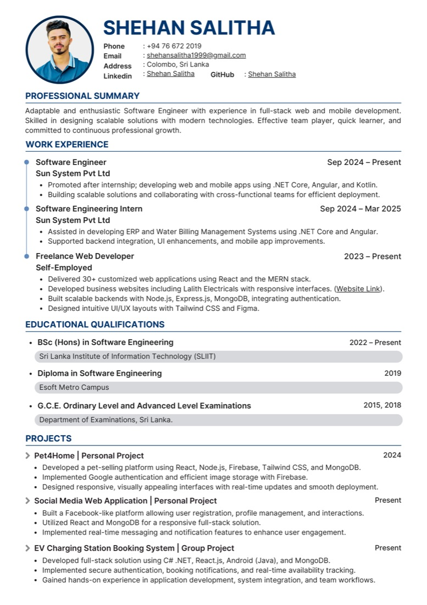
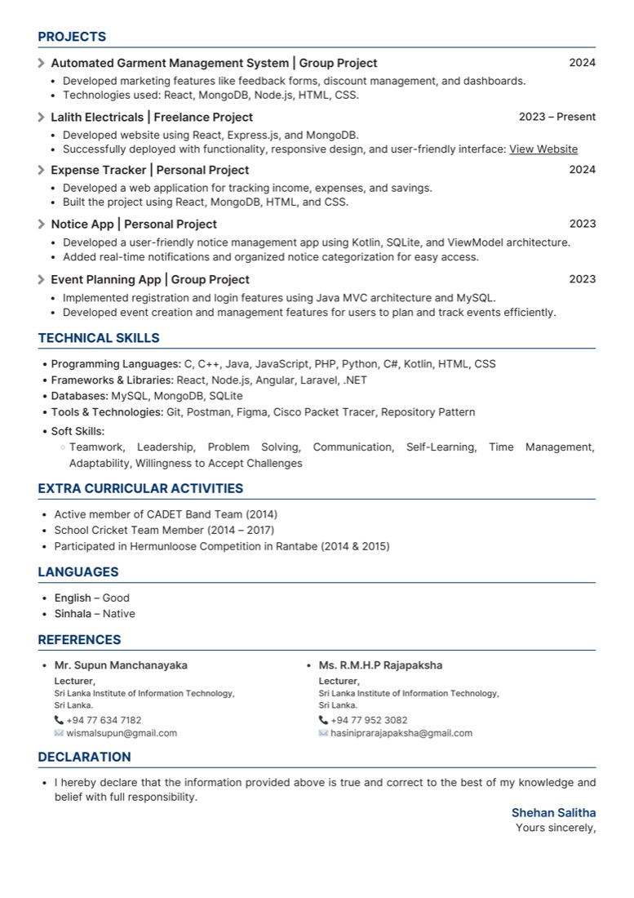
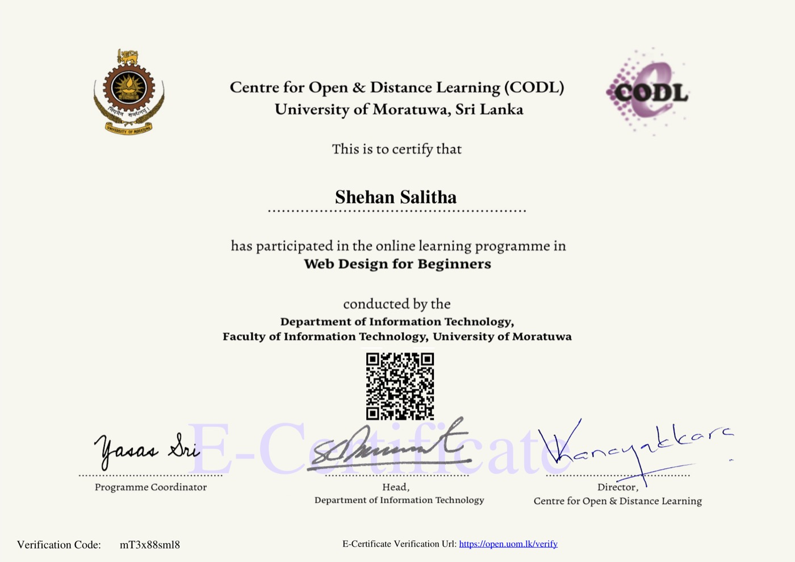
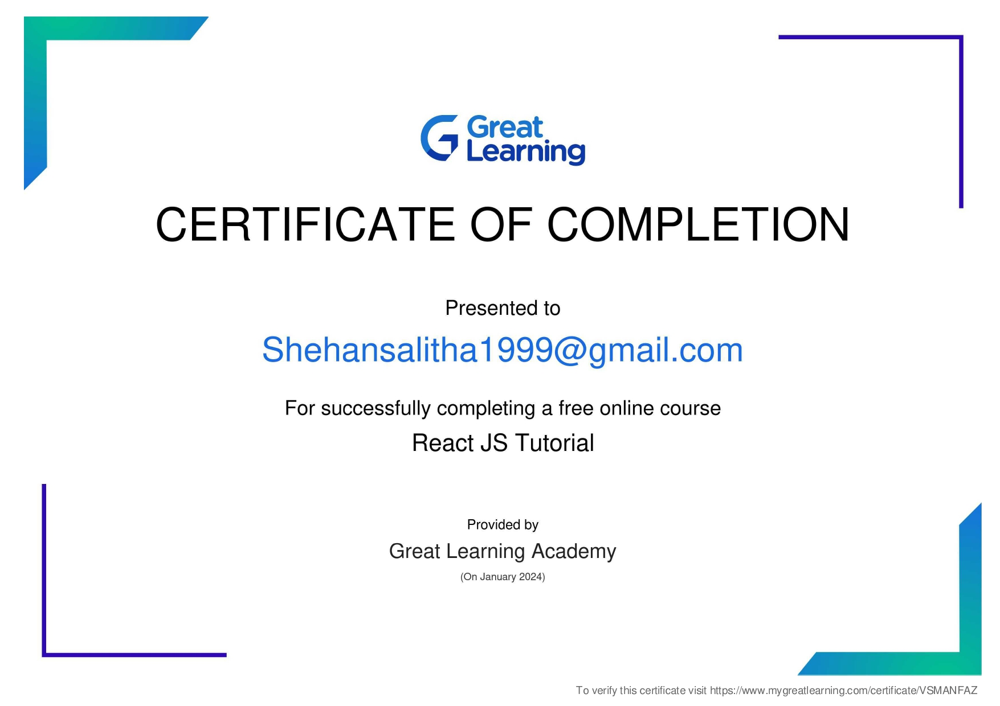
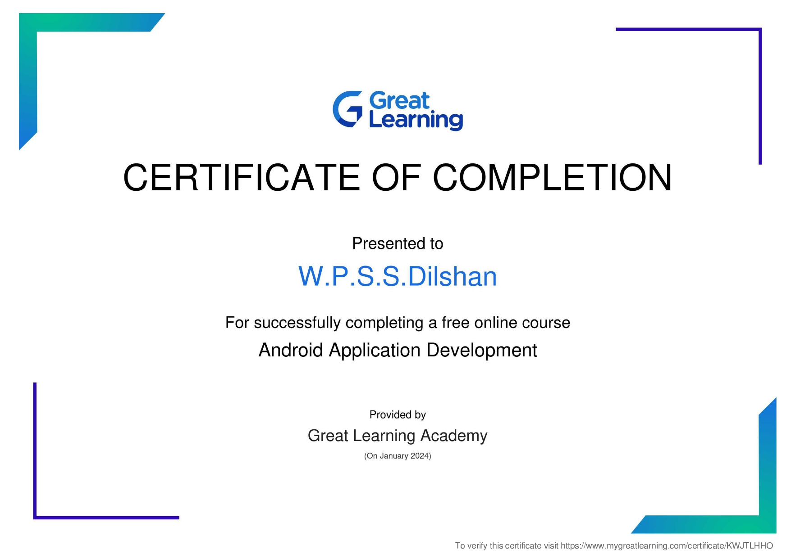

Software Engineering Undergraduate & Software Developer
Sri Lanka Institute of Information Technology (SLIIT)
Preparation for Professional World (PPW)
View PortfolioAbout Me
Software Developer · SLIIT Final Year Undergraduate
I am a passionate and dedicated Software Engineering undergraduate at the Sri Lanka Institute of Information Technology (SLIIT), currently in my final year. Alongside my academic journey, I am working as a Software Developer at Sun System Technologies & Developers (Pvt) Ltd, where I actively contribute to real-world enterprise applications.
I have strong experience in full-stack development, working with technologies such as .NET Core, Angular, React, Node.js, and SQL-based databases. My work primarily focuses on building scalable systems, API development, and integrating complex business logic into user-friendly applications.
During my professional experience, I have contributed to systems like ERP solutions and Water Billing Management Systems, where I handled backend development, frontend enhancements, and mobile integration. I am also experienced in mobile app development using Kotlin and modern UI design practices.
I am highly interested in building efficient, user-centered, and scalable software solutions, and I continuously strive to improve my skills in modern technologies and system design.
Preparation for Professional World (PPW)
Throughout this course, I have gained a comprehensive understanding of the essential communication skills required to succeed in a professional environment. Each lecture built upon the previous one, and together they have transformed the way I approach written and spoken communication in business contexts. This reflective journal summarizes what I have learned and how I intend to apply these skills in my future career.
The Business Writing lecture taught me that professional communication must be clear, concise, and action-oriented. I learned six key principles: include a call to action, use polite language, be concise, avoid slang and contractions, handle abbreviations properly (full term first, then the acronym), and always revise and proofread.
I particularly appreciated the examples of wordy versus concise sentences – for instance, changing "In the event of an emergency, please exit the building as soon as you possibly can" to "In case of emergency, exit immediately." This showed me how eliminating unnecessary words makes writing more powerful. I now understand that vague qualifiers like "a bit" or "a lot" should be replaced with precise words like "slightly" or "numerous," and that the verb "get" is too informal for business writing; I should use "obtain," "receive," or "find" instead. These principles will help me write professional emails, memos, and reports without sounding amateurish or wordy.
The Formal Email Writing lecture gave me a clear template for composing professional emails. I learned that every email should have a specific subject line, a proper salutation (using the recipient's surname and title, or "Dear Sir/Madam" if unknown), a clear opening stating my purpose, a concise body, a closing line that requests action or expresses thanks, and a professional signature.
I memorised useful phrases for different situations – for example, "I am writing with reference to…" to open, "I regret to inform you that…" to give bad news, and "A prompt response would be highly appreciated" to request action. I also learned the importance of replying promptly with "Noted with thanks" and including the original message when adding new recipients. Before this lecture, I often wrote emails without a clear subject line or a proper closing. Now I realise that a well-structured email projects professionalism and respect for the recipient's time.
The Telephone Etiquette lecture was eye-opening because I had never considered how much my tone and listening habits affect business calls. I learned that every call has three elements: introduction, purpose, and conclusion. Essential skills include preparing notes before calling, identifying myself immediately, eliminating distractions, and using greetings that thank the caller and identify my company.
The most surprising lesson was that smiling truly transfers into my tone of voice – I tried it, and it works. I also learned to avoid a monotone and to vary my pitch. Active listening techniques, such as saying "I see" or "Okay" and taking notes, help me avoid roadblocks like emotional filters and mental side-trips. I now know that being assertive (confident and solution-oriented) is far more effective than being passive or aggressive. I will apply these skills in future internship interviews and client calls.
The Report Writing lecture taught me how to organise information logically and professionally. I learned the difference between information reports, research reports, and proposal reports. The standard structure – title page, executive summary (written last, max 5% of the report), table of contents, glossary, introduction, methodology, findings, discussion, conclusion, recommendations (SMART), references, and appendices – gave me a clear framework.
I now understand that the methodology section describes how data was collected, findings are pure facts, and discussion interprets those facts. The executive summary must only contain information from the report and is written after the report is complete. I also learned that reports must be objective, not subjective, and that subsidiary parts like the glossary and appendices support the main content. This knowledge will help me write academic and business reports with confidence and credibility.
The Presentation Skills lecture transformed my approach to public speaking. I learned the 10%/80%/10% structure: a brief beginning to capture interest, a substantial middle (80% of the time) with signposting phrases like "Moving on…" and "To conclude…", and a strong ending. The 6×7 rule for slides – maximum six lines per slide and seven words per line – ensures that slides are readable and not overwhelming.
I now use sans-serif fonts (Arial, Calibri) in size 30–44, light backgrounds with dark fonts, and cool colours like blue and green. I avoid fancy animations, distracting GIFs, and paragraphs on slides. Delivery techniques – eye contact, voice variety, facial expressions, good posture, and professional appearance – are just as important as the content. I also learned to use cue cards instead of reading a script, to rehearse in the actual location, and to handle group presentations with smooth transitions. I will use these skills in my upcoming academic presentations and future job interviews.
Overall, the PPW course has equipped me with practical, actionable communication skills that I can immediately apply in academic, professional, and personal contexts. From writing concise emails and reports to delivering confident presentations and handling telephone calls with poise, I feel much better prepared for the professional world. This reflective journal will serve as a reminder of the key principles I have learned, and I intend to keep it in my portfolio as evidence of my growth and readiness for my career.
My Roadmap to Success in Software Engineering
My career goal is to grow into a highly skilled full-stack software engineer with expertise in designing and developing enterprise-level applications. I am committed to continuous learning, professional growth, and making meaningful contributions to the technology industry.
Problem-Solving & Analytical Thinking
Real-World System Development Experience
Strong Backend & API Development Skills
UI/UX-Focused Frontend Development
Quick Learner & Adaptable to New Technologies
My Professional Resume


Evidence of Continuous Learning & Skill Development
Web Development Course — Online Platform
Obtained upon successful completion of the Web Design for Beginners course, covering the fundamentals of web design, HTML, CSS, and modern design principles.

JavaScript / Programming Course — Online Platform
Awarded upon completing a JavaScript course that covered core programming concepts, DOM manipulation, and modern JS practices, strengthening my front-end development skills.

Mobile Development Course — Online Platform
Earned upon finishing an Android Development course covering app architecture, UI design, and Kotlin-based development, complementing my professional mobile development experience.

{kind=link}
{kind=link}